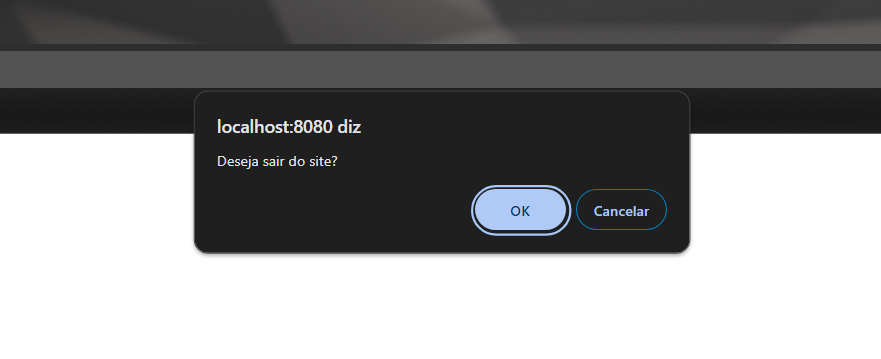

Agora, você passará a aprender a parte de DOM (Document Object Model)do JavaScript.
Basicamente, nessa parte, você aprenderá como utilizar o JavaScript para fazer alterações no seu site da web.
Introdução
Como já dito algumas vezes, JavaScript DOM é a parte do JavaScript que você trabalha com alterações no site da web, ou seja,
através de alguns comandos, você consegue modificar a aparência do seu website através do DOM.
O que é DOM?
DOM (Document Object Model) é basicamente uma representação hierárquica de um documento HTML, em que cada tag (p, h1, img, etc)
representa um nó no DOM. O DOM é muito importante para que haja a interação com o HTML usando JavaScript, porque é a partir daí que existe a ideia de usar o JavaScript
para interatividade em um site,já que com o DOM já é possível, por exemplo, mostrar mensagens quando você clica em um botão.
Apesar disso tudo, a intenção deste tutorial é ensinar o básico, dar uma introdução sobre esse tema, então, caso queiram se aprofundar mais em JavaScript, há muitos cursos na internet e
também sites que ensinam JavaScript. Um exemplo é a w3schools, que ensina bastante coisas sobre JavaScript para você aprender
caso queira conhecer mais sobre a linguagem.
Vamos te ensinar 4 métodos para você mandar mensagens para o seu site e interagir com o usuário.
São eles:
document.write
alert
confirm
prompt
1 - document.write
Document é o ponto de partida para fazer as alterações no HTML, pois ele representa o documento HTML em que ele está inserido. Aí para realizar uma ação,
o comando sempre vem na frente do "document", nesse caso, write, que vai escrever no site como se fosse a tag p do html.
2 - alert
Manda um alerta para o navegador. Um exemplo muito comum nos sites é quando fazemos alterações neles e não as salvamos.
3 - confirm
Tem uma função parecida com a do alert, a única diferença é que ela vem com dois botões, um escrito "OK" e o outro "Cancelar".

4 - prompt
Também mostra a "caixinha" de alerta que nem no "alert" e no "confirm", porém ele mostra uma caixa de texto para você escrever nela.
E aqui você finalizou o tutorial de JavaScript DOM!